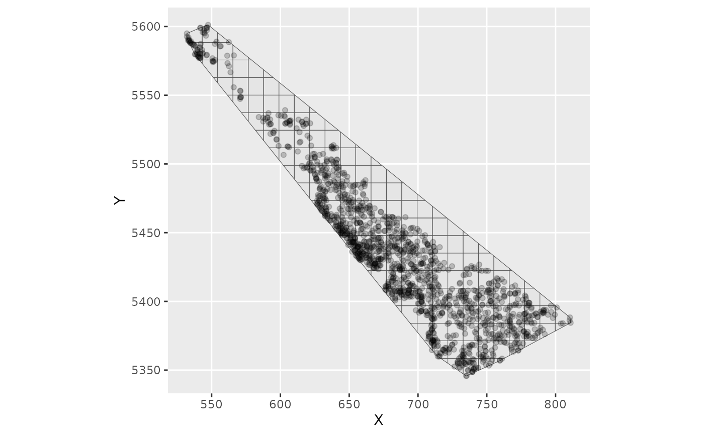

![[Experimental]](figures/lifecycle-experimental.svg)
Build or use an sf polygon grid, overlay point observations onto grid
cells, construct grid-cell adjacency, and return labelled data plus an
sdmTMBareal domain for SAR/CAR models.
Usage
make_areal_grid(
data,
xy_cols,
spatial_domain = NULL,
cellsize = NULL,
n = NULL,
square = TRUE,
space_column = "grid_cell",
adjacency = c("rook", "queen"),
crs = NA
)Arguments
- data
A data frame containing point coordinates.
- xy_cols
Character vector of length 2 naming spatial coordinate columns in
data.- spatial_domain
Optional
sf/sfcpolygon object. Ifcellsizeornis supplied, this object is treated as a boundary from which a grid is generated and clipped. Otherwise it is treated as the grid itself.- cellsize
Optional cell size passed to
sf::st_make_grid().- n
Optional grid dimensions passed to
sf::st_make_grid(). Ignored ifcellsizeis supplied.- square
Logical passed to
sf::st_make_grid(). UseFALSEfor hexagonal grids.- space_column
Column name to add to returned data.
- adjacency
Polygon adjacency type:
"rook"for shared edges or"queen"for any touching boundary.- crs
Optional coordinate reference system for
datacoordinates, passed tosf::st_as_sf().
Value
A list with data, grid, and domain elements. domain can be
supplied to sdmTMB() via the mesh argument.
Examples
library(ggplot2)
# Basic example of using make_areal_grid()
dat <- data.frame(
x = c(0.25, 1.25, 0.25, 1.25),
y = c(0.25, 0.25, 1.25, 1.25),
depth = c(12, 18, 9, 15)
)
boundary <- sf::st_as_sf(
sf::st_as_sfc(sf::st_bbox(c(xmin = 0, ymin = 0, xmax = 2, ymax = 2)))
)
areal_grid <- make_areal_grid(
data = dat,
xy_cols = c("x", "y"),
spatial_domain = boundary,
n = c(2, 2)
)
head(areal_grid$data)
#> x y depth grid_cell
#> 1 0.25 0.25 12 cell_001
#> 2 1.25 0.25 18 cell_002
#> 3 0.25 1.25 9 cell_003
#> 4 1.25 1.25 15 cell_004
areal_grid$domain$n_s
#> [1] 4
# Dogfish example going from a data frame to overlaying a grid
# Convert to an sf object:
dogfish_points <- st_as_sf(dogfish, coords = c("X", "Y"), crs = NA)
# make a boundary polygon around observations:
dogfish_boundary <- st_union(dogfish_points) |>
st_convex_hull() |>
st_as_sf()
# overlay a grid and create objects for fitting:
dogfish_grid_obj <- make_areal_grid(
dogfish,
xy_cols = c("X", "Y"),
spatial_domain = dogfish_boundary,
n = c(25L, 20L),
space_column = "cell_id"
)
names(dogfish_grid_obj)
#> [1] "data" "grid" "domain"
ggplot() +
geom_sf(data = dogfish_grid_obj$grid) +
geom_point(data = dogfish_grid_obj$data, aes(X, Y), alpha = 0.2)

fit_car <- sdmTMB(
catch_weight ~ poly(log(depth), 2),
data = dogfish_grid_obj$data,
mesh = dogfish_grid_obj$domain,
spatial_model = "car",
family = tweedie(link = "log"),
spatial = "on",
offset = log(dogfish_grid_obj$data$area_swept)
)
fit_car
#> Spatial model fit by ML ['sdmTMB']
#> Formula: catch_weight ~ poly(log(depth), 2)
#> Mesh: dogfish_grid_obj$domain (isotropic covariance)
#> Data: dogfish_grid_obj$data
#> Family: tweedie(link = 'log')
#>
#> Conditional model:
#> coef.est coef.se
#> (Intercept) 5.32 0.39
#> poly(log(depth), 2)1 -26.20 4.83
#> poly(log(depth), 2)2 -21.92 2.76
#>
#> Dispersion parameter: 9.03
#> Tweedie p: 1.74
#> CAR spatial dependence: 0.95
#> Spatial CAR field scale: 1.94
#> ML criterion at convergence: 6187.438
#>
#> See ?tidy.sdmTMB to extract these values as a data frame.